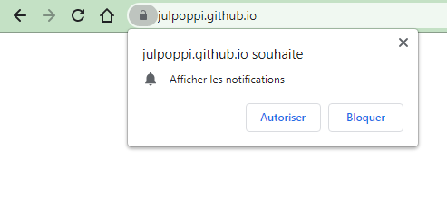
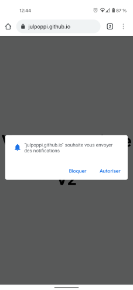
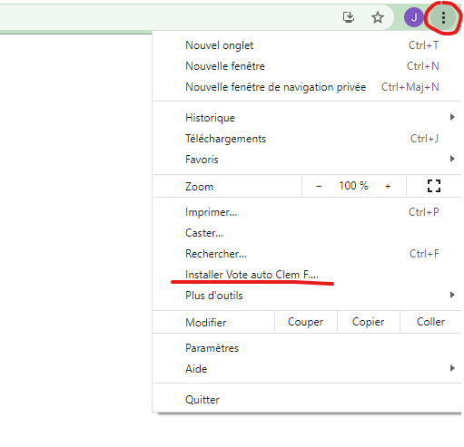
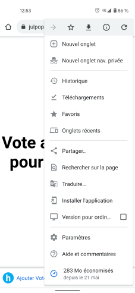

Version v3
Ce site permet de générer des votes pour Clément régulièrement et automatiquement sur Starmaxx. Les votes sont générés comme si vous aviez visité le site.
Vous pouvez installer ce site sur votre mobile et/ou sur vos PC (cela permet de générer autant de vote que vous avez d'appareils).
Vous recevrez une notification silencieuse à chaque vote. Si vous ne recevez plus de notifications au bout de 48h, rouvrez l'application pour relancer les votes.
Suivre la Procédure pour la mise en route. | Voir la FAQ
| Sur PC | Sur mobile |
|---|---|
|  |  |
| Sur PC | Sur mobile |
|---|---|
|  |  |
| Pourquoi je reçois des notifications ? | Pour vous permettre de vous assurer que les votes automatiques fonctionnent toujours. Voir "Pourquoi je dois ouvrir l'application de temps en temps ?" |
| Pourquoi je ne reçois plus les notifications ? | Voir "Pourquoi je dois ouvrir l'application de temps en temps ?" |
| Pourquoi je dois ouvrir l'application de temps en temps ? | Le système utilisé fait que chrome effectue des requêtes en arrière plan pour voter (environ 1 fois par jour ou moins). Cependant, le rythme des votes est géré
par chrome et dépend de l'usage de l'application. Au bout d'un certain temps, chrome considère que vous n'utilisez plus l'applicaton et arrête de voter en arrière plan. Il faut alors relancer l'application pour redémarrer les votes automatiques. |